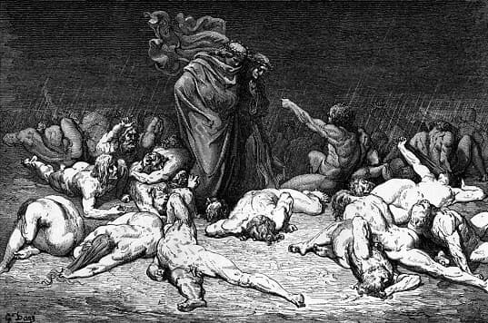
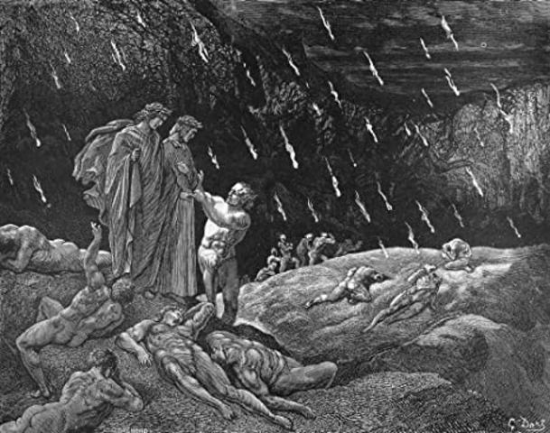

Dante’s Inferno

About Dante: Dante Alighieri (1265–1321) was an Italian poet, best known for his masterpiece The Divine Comedy, a three-part epic that explores Hell, Purgatory, and Heaven.
The Inferno: The first part of the trilogy, describes Dante’s journey through the 9 circles of Hell, guided by the Roman poet Virgil. Each circle punishes sinners according to the severity of their sins.
The Nine Circles of Hell

The structure of Hell is divided into 9 circles, each for a specific sin: Limbo, Lust, Gluttony, Greed, Wrath, Heresy, Violence, Fraud, and Treachery. Punishments grow harsher as one descends deeper.
First Circle (Limbo)
Dante’s First Circle of Hell is inhabited by virtuous non-Christians and unbaptized pagans, who are punished with spending eternity in an inferior form of Heaven. They reside in a castle with seven gates which symbolize the seven virtues. Here, Dante encounters many prominent people from classical antiquity such as Homer, Socrates, Aristotle, Cicero, Hippocrates, and Julius Caesar.
Second Circle (Lust)
In the Second Circle of Hell, Dante and his companion Virgil encounter people who were overcome by lust. They are punished by being violently blown back and forth by strong winds, which prevents them from finding peace and rest. These strong winds symbolize the restlessness of a person who is driven by the desire for lustful pleasures. Once again, Dante sees many notable people from history and mythology, including Cleopatra, Tristan, Helen of Troy, all of whom were adulterous during their lifetimes.
Third Circle (Gluttony)

When reaching the Third Circle of Hell, Dante and Virgil find souls of gluttons who are watched over by the three-headed monster, Cerberus. Sinners in this circle of Hell are punished by being forced to lie in a vile slush created by never-ending icy rain. The slush symbolizes personal degradation of those who overindulge in food, drink, and other earthly pleasures. Their inability to see the other gluttons around them represents their selfishness and coldness. Here, Dante speaks to a character called Ciacco who tells him that the Guelphs (a faction supporting the Pope) will defeat and expel the Ghibellines (a faction supporting the Emperor, to which Dante belonged) from Florence, which happened in 1302 before the poem was written (after 1308).
Fourth Circle (Greed)
In the Fourth Circle of Hell, Dante and Virgil see the souls of people who are punished for greed. They are divided into two groups – those who hoarded possessions and those who lavishly spent – they are seen jousting with one another. They use great weights as a weapon, pushing it with their chests, which symbolizes their selfish pursuit for wealth during their lifetime. Both groups that are guarded by a character called Pluto (likely based on the ancient Roman ruler of the underworld). The souls are so occupied with their actions that Dante and Virgil do not try to speak to them. Here, Dante notes that he sees many clergymen among them, including cardinals and popes.
Fifth Circle (Anger)
The Fifth Circle of Hell is where the wrathful and sullen are punished for their sins. Transported on a boat by Phlegyas, Dante and Virgil witness the wrathful fighting each other on the surface of the river Styx, while the sullen gurgle beneath the surface of the water. Once again,the punishment reflects the type of sin committed during their lifetime. While passing through, the poets are approached by Filippo Argenti, a prominent Florentine politician who confiscated Dante's property after his expulsion from Florence.
Sixth Circle (Heresy)

When reaching the Sixth Circle of Hell, Dante and Virgil encounter heretics condemned to spend eternity in flaming tombs. Here, Dante talks with a couple of Florentines – Farinata degli Uberti and Cavalcante de’ Cavalcanti – but he also sees other notable historical figures, including the ancient Greek philosopher Epicurus, Holy Roman Emperor Frederick II, and Pope Anastasius II. However, some scholars argue that Dante mistakenly condemns Pope Anastasius II as a heretic. Instead, they suggest that the poet likely meant the Byzantine Emperor Anastasius I.
Seventh Circle (Violence)
The Seventh Circle of Hell is divided into three rings. The Outer Ring houses murderers and others who were violent to other people or property. Here, Dante sees Alexander the Great (though his inclusion is debated), Dionysius I of Syracuse, Guy de Montfort, and many other notable historical and mythological figures such as the Centaurus, submerged in a river of boiling blood and fire. In the Middle Ring, the poet sees those who committed suicide. Their souls have been transformed into trees and bushes, constantly tormented as harpies tear at their leaves and branches. Additionally, profligates—those who recklessly wasted their lives—are pursued and attacked by savage dogs. The Inner Ring holds blasphemers and sodomites, who suffer in a desert of burning sand and burning rain falling from the sky.
Eighth Circle (Fraud)

The Eighth Circle of Hell is for the fraudulent. Dante and Virgil reach it on the back of Geryon, a flying monster with different natures, just like the fraudulent. This circle of Hell is divided into 10 Bolgias (stony ditches) with bridges between them. In Bolgia 1, Dante sees panderers and seducers. In Bolgia 2 he finds flatterers. After crossing the bridge to Bolgia 3, he and Virgil see those who are guilty of simony. After crossing another bridge between the ditches to Bolgia 4, they find sorcerers and false prophets. In Bolgia 5 are housed corrupt politicians, while in Bolgia 6 are hypocrites and in the remaining 4 ditches, Dante finds hypocrites (Bolgia 7), thieves (Bolgia 7), evil counselors and advisers (Bolgia 8), divisive individuals (Bolgia 9), and various falsifiers such as alchemists, perjurers, and counterfeits (Bolgia 10).
Ninth Circle (Treachery)
The Ninth Circle of Hell is divided into 4 regions according to the seriousness of the sin. Though all souls are frozen in an icy lake. Those who committed more severe sin are deeper within the ice. Each of the 4 regions is named after an individual who personifies the sin. Thus region 1 is named Caina after Cain who killed his brother Abel, region 2 is named Antenora after Anthenor of Troy who was counselor to Priam during the Trojan War, region 3 is named Ptolomaea after Ptolemy (son of Abubus), while region 4 is named Judecca after Judas Iscariot, the apostle who betrayed Jesus with a kiss.